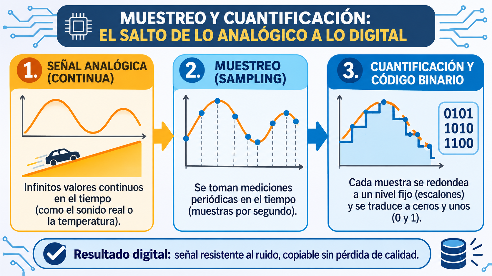

¿Por qué un reloj de agujas funciona distinto a uno digital?
Mirá tu muñeca, la pared del aula o la pantalla del celular. En un reloj de agujas clásico, el segundero barre
el espacio de forma suave y continua: entre las 10:14 y las 10:15 existen infinitos puntos y momentos
físicos intermedios. En cambio, en una pantalla digital, el número cambia mediante un salto
instantáneo: pasa de golpe de 14 a 15, sin mostrar ningún estado intermedio.
Esa simple diferencia es la puerta de entrada a la revolución más importante de las comunicaciones modernas: la transición de señales continuas a datos discretos.
La posición de las agujas representa el tiempo con magnitudes físicas ininterrumpidas (ángulos y fricción de engranajes).
No existen valores intermedios dibujados. La información se almacena y proyecta como números binarios codificados.
Seleccioná cuál de las dos opciones utilizás con mayor frecuencia en cada rubro. Al finalizar, el sistema calculará tu Índice de Convivencia Tecnológica:
Completá las 4 categorías para descubrir tu perfil.
1. Señales Continuas vs. Valores Discretos
En la naturaleza todo es continuo: el sonido de nuestra voz, el calor del sol o la luz del día no tienen saltos abruptos. ¿Cómo hace una computadora para procesar ese mundo?
Señales Continuas
Una señal analógica varía suavemente en el tiempo y puede tomar infinitos valores intermedios de voltaje, corriente o presión acústica.
- Fidelidad natural: Es una copia proporcional y continua del fenómeno físico original (ej. el surco de un vinilo).
- Vulnerabilidad al ruido: Cualquier interferencia electromagnética o polvo se suma a la señal y no se puede borrar sin dañar la información.
- Degradación por copia: Al copiar de cinta a cinta, cada nueva generación pierde nitidez (siseo/hiss).
Valores Discretos
Una señal digital no admite infinitos valores: solo reconoce estados numéricos finitos y bien definidos, generalmente representados en sistema binario (0 y 1).
- Inmunidad al ruido: Si el voltaje fluctúa levemente por interferencia, el circuito
aún distingue claramente si es un
0o un1. - Clonación perfecta: Se puede copiar un millón de veces y el bit número 500.000 seguirá siendo exactamente el mismo.
- Compresión y algoritmos: Permite almacenar bibliotecas completas en una tarjeta microscópica o enviarlas por fibra óptica.
3. Estudio de Caso: Casete de Cinta vs. Archivo MP3
Comparativa técnica de calidad, durabilidad, almacenamiento y transmisión de audio:
| Criterio | 📻 Casete de Cinta (Analógico) | 🎧 Archivo MP3 (Digital) |
|---|---|---|
| Calidad de Sonido y Ruido |
Siseo Magnético (Hiss)
La cinta produce fricción física en el cabezal reproductor, generando un siseo constante de fondo. Rango dinámico limitado. |
Audio Limpio y Codificado
El sonido se descompone matemáticamente en frecuencias numéricas (44.100 muestras/seg). Cero siseo de fondo. |
| Durabilidad y Desgaste |
Desgaste Mecánico Continuo
Cada vez que escuchás la canción, la cinta se estira, pierde partículas magnéticas y corre riesgo de enredarse ("engancharse en el pasacintas"). |
Inalterable en el Tiempo
Los archivos digitales no tienen partes móviles que se gasten al escucharlos. La reproducción no degrada jamás los datos. |
| Almacenamiento y Portabilidad |
Capacidad Fija y Voluminosa
Almacena entre 60 y 90 minutos de música en un cartucho plástico de unos 100 gramos. Llevar 20 álbumes requería una mochila entera. |
Capacidad Masiva y Mínima
En una tarjeta micro-SD del tamaño de una uña o en un teléfono caben decenas de miles de canciones o acceso inmediato a streaming en la nube. |
| Copia y Duplicación |
Pérdida Generacional
Copiar un casete a otro requiere reproducirlo en tiempo real (60 minutos de espera) y la copia siempre suena con mayor ruido que el original. |
Clonación Instantánea 1:1
Copiar un MP3 toma microsegundos a través de internet o memoria USB, conservando una réplica 100% idéntica sin pérdida de calidad. |
4. 🎥 Recursos Audiovisuales y Visuales
Material audiovisual e infográfico para reforzar cómo las señales físicas se transforman en datos digitales mediante muestreo y cuantificación:
🎬 Introducción a los Sistemas Digitales y Analógicos
Video ExplicativoObservá en este recurso audiovisual los ejemplos cotidianos que diferencian un sistema continuo de uno digital basado en código binario.
Observá en este recurso audiovisual los ejemplos cotidianos que diferencian un sistema continuo de uno digital basado en código binario.
↗ Ver en YouTube🖼️ Infografía: Muestreo y Cuantificación
Recurso Visual
Síntesis visual paso a paso de cómo se toman muestras en el tiempo y se asignan niveles discretos de cuantificación.
Misión: Arqueología Tecnológica en tu Entorno
Investigá tu casa o escuela, detectá un sistema de información y completá la ficha guiada para clasificar su funcionamiento y argumentar el impacto de su digitalización.
Formulario de Registro y Análisis de Digitalización
Ficha Técnica: Sistema Seleccionado
Criterios de Evaluación y Rúbrica Formativa
Criterios claros e integrales para valorar tu proceso de comprensión y análisis tecnológico en 2.° Año B - Turno Tarde:
🎯 1. Diferenciación Conceptual
Distingue con precisión rigurosa entre magnitudes físicas continuas (analógicas) y representaciones discretas (digitales), usando vocabulario técnico adecuado.
Nivel Esperado: Destacado🪜 2. Comprensión del Proceso
Explica el proceso de digitalización aplicando con claridad la metáfora de la rampa vs. los escalones (muestreo temporal y niveles de cuantificación).
Nivel Esperado: Destacado⚖️ 3. Argumentación y Juicio Crítico
Justifica ventajas y desventajas concretas del paso a lo digital (almacenamiento, desgaste mecánico, fidelidad al ruido e impacto ambiental/obsolescencia).
Nivel Esperado: Destacado💬 4. Comunicación en Bimodalidad
Entregar a través del formulario de evaluación adjunto su producción completa, participa de las instancias de consulta y reflexiona sobre su propio aprendizaje.
Nivel Esperado: DestacadoAutoverificación Formativa Inmediata (3 Preguntas Clave)
📝 Autoevaluación y Entrega Final
Entregar a través del formulario de evaluación adjunto tu actividad práctica y valoración personal del recorrido.
📌 Completá este formulario para registrar tu autoevaluación y dejar constancia de la entrega de tu actividad
Canales de Consulta y Acompañamiento Permanente
La bimodalidad nos acerca. Tenés múltiples vías para resolver dudas técnicas, metodológicas o de entrega con tu equipo docente y tus compañeros de 2.° Año B - Turno Tarde.
Emmanuel Galiotti
"En nuestro trayecto formativo, cada duda es una oportunidad de construir conocimiento colectivo. No te quedes con inquietudes, escribime."